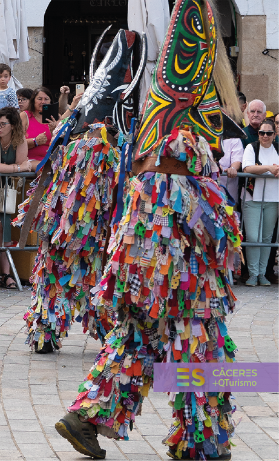
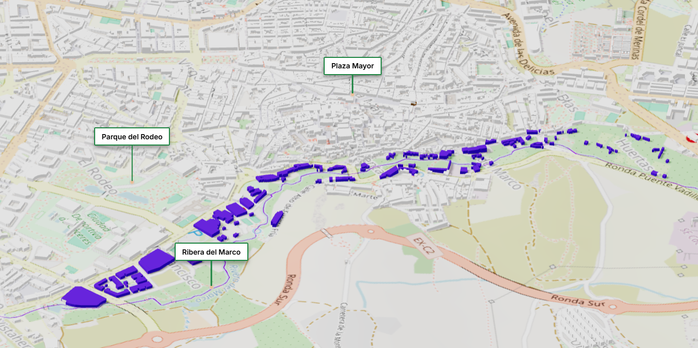
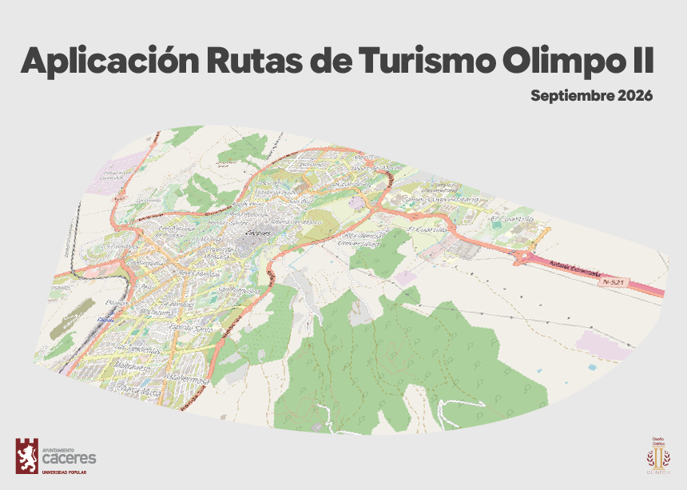
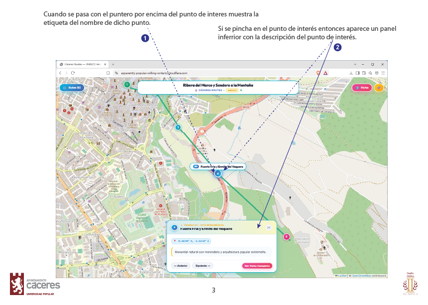
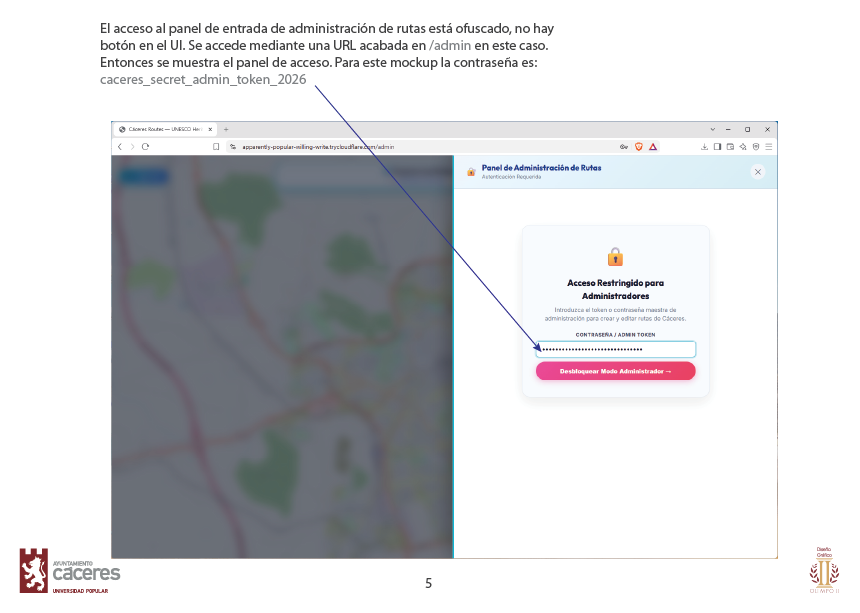
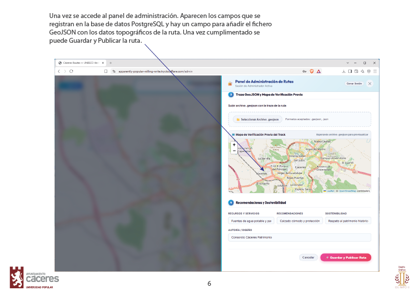
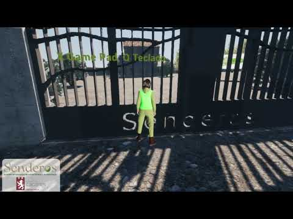

Campaña Turismo Cáceres ES+QTurismo
Cuatro piezas fotográficas de identidad y campaña: muñecas florales, escaleras de la feria, pasacalles y Jarramplas de Piornal.
Selección de identidad visual, cartografía tridimensional, aplicaciones web y piezas audiovisuales desarrolladas durante 2026 en Cáceres.

Cuatro piezas fotográficas de identidad y campaña: muñecas florales, escaleras de la feria, pasacalles y Jarramplas de Piornal.

Presentación institucional interactiva y análisis de identidad visual, stands temáticos y propuesta gráfica para la I Feria Nacional del Folklore (#es+QTurismo).

Modelo tridimensional interactivo GLTF de Cáceres con navegación orbital, hitos patrimoniales georreferenciados y visor documental.

Aplicación web responsiva con simulador de dispositivos (PC, Tablet y Móvil), modo oscuro OLED, cartografía y fichas técnicas oficiales.








Ocho láminas del recorrido: mapa interactivo, selección de ruta, ficha de detalle, puntos de interés, panel de administración y adaptación móvil.

Prueba de concepto en vídeo de la aplicación educativa del aula de naturaleza, planteada como recorrido interactivo con control por teclado o mando.